Video Tape Transcript of X11 SimCity Demo
This is a transcript of a video taped demonstration of SimCity
on X11. The normal
text is Don Hopkins talking.
The "quoted italic text" is SimCity talking. The (parenthetcal
italic text) is extra annotation and explanation that's not on the video
tape.
-- Beginning of Video Tape --
"Skywatch One reporting heavy traffic."
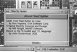
I'm Don Hopkins from DUX Software, demonstrating
multi user SimCity for Unix,
running on X11 on an Indigo workstation, based on the original SimCity by
Will Wright from Maxis.
"Skywatch One reporting heavy traffic."
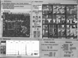
On the left is an overall map window, and on the right is a close-up animated
view. You can pan the animated view around, by dragging the yellow rectangle
on the map. Then you can edit with the bulldozer, and build.
"Rumble, crash!" (Destroy a building with the bulldozer.)
"Residential." (Select the Residential zoning icon from the pallet,
and zone some land.)
"Skywatch One reporting heavy traffic." (Oh no, that helicopter
won't shut up!)
You can pan by dragging the middle button, directly, without moving to the
scroll bars, which don't exist. And you can select from the pallet of editing
tools, by pressing on the icon.
"Road." (Select the Road building icon from the pallet, and
make some roads.)
"Wire." (Now string some electrical wires to hook up to the power
grid.)
"Police Station." (Keep the donut shops in business.)
Or clicking the right button, and popping up a pie
menu.
(Check out my Pie Menu Page, for
more information about pie menus!)
"Whoosh! Zone? Fire Station." (Press the right mouse button to
"whoosh" up a pie menu. Select the Zone submenu, then select Fire
Station icon from that.)

"Skywatch One reporting heavy traffic."
"Whoosh! Wire."
"Whoosh! Bulldozer."
"Crash, crash, rumble, crash!"
"Skywatch One reporting heavy traffic."
"Whoosh! Zone? Industrial."
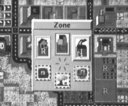
"Whoosh! Bulldozer."
"Rumble, rumble, rumble!"
"Skywatch One reporting heavy traffic."
"Whoosh! Build? Nuclear Power."
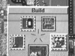
"Whoosh! Road."
"Whoosh! Wire."
Pie menus work with mouse-ahead. If I remember the direction, I can press
down, move, and release, to select without showing the menu.
"Whoosh! Road." (No pie menu appears on the screen, but we
hear the feedback and it selects the icon!)
"Whoosh! Rail." (See, easy!)
"Whoosh! Bulldozer." (Believe me, you get used to it!)
Or I can always pause, to see ... the menu.
"Whoosh! ... Road." (You can always see the menu if you need
to.)
"Whoosh! Zone? ... Fire Station."
"Skywatch One reporting heavy traffic."
"Whoosh! Bulldozer."
"Rumble, crash!"
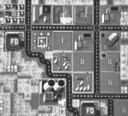
"Whoosh! Zone? Industrial."
(Pan on over to the Panhandle, in Haight Ashbury, east of Golden Gate Park.)
"Whoosh! Bulldozer."
"Rumble, rumble, rumble."
(Clear away some park in the Panhandle.)
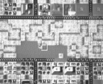
"Whoosh! Road."
(Fix up the part of Oak Street that we accidentally destroyed.)
"Whoosh! Zone? Residential."
(Put down a residential zone in the park.)
"Whoosh! Wire."
(Wire the new zone onto the power grid.)
"Whoosh! Zone? Park."
(Put park land back down around the residential zone.)
"Whoosh! Zone? Residential."
(Put down another residential zone in the park.)
"Whoosh! Wire."
(Wire the zone to the power grid.)
"Whoosh! Zone? Park."
(Put more parks around the new zone.)
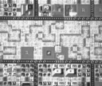
"Whoosh! Rail."
"Skywatch One reporting heavy traffic."
(Put a railroad down along the north edge of park next to Fell Street.)
(The train appears and starts heading down the railroad, as it's being drawn.)
(Oh no, we're missing one piece of rail because there was a fountain in
the way!)
(The train is heading for the fountain! Quick, pie menus to the rescue!)
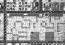
"Whoosh! Bulldozer."
"Rumble, rumble."
(Bulldoze the fountain out of the way.)
"Whoosh! Rail."
(Put down the rail just in time, right under the wheels of the oncoming
train!)

"Whoosh! Rail."
"Whoosh! Bulldozer."
"Rumble, rumble."
"Whoosh! Rail."
(Make a little maze of railroad tracks to keep the train busy while we bulldoze
another couple of fountains and lay down the rest of the track.)
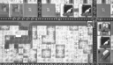
"Whoosh! Bulldozer."
"Rumble, rumble, rumble, rumble!"
"Whoosh! Bulldozer."
"Whoosh! Build? Airport."
"Whoosh! Oop."
(Build an airport in the middle of the Panhandle.)
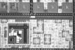
"Whoosh! Road."
(Build an access road to the airport from Fell Street.)
"Whoosh! Bulldozer."
"Whoosh! Wire."
(Hook the airport up to the power grid.)
"Whoosh! Road."
"Whoosh! Zone? Park."
(Airport's radar starts spinning, as the train rolls back down the track.)
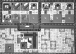
-- End of Video Tape --